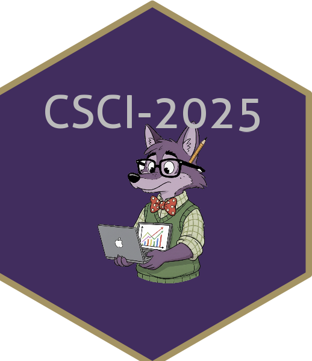

College of Idaho
CSCI 2025 - Winter 2026
rmarkdown, bookdown, distill, xaringan, etc.).qmd File.qmd---)---**text***text*Code: `code`- Item or 1. Item# Header 1, ## Header 2[text](url)Cmd/Ctrl + Alt + I (or Cmd/Ctrl + Shift + I in some setups)```{r} and ```Cmd/Ctrl + Enter (run line)Cmd/Ctrl + Shift + Enter (run entire chunk)#|| Option | Effect |
|---|---|
eval: false |
Code is not run (no results generated). Useful for examples. |
include: false |
Code runs, but code AND results are hidden. Good for setup chunks. |
echo: false |
Code is hidden, but results are shown. Great for reports for non-coders. |
message: false |
Hides messages (like when loading packages). |
warning: false |
Hides warnings. |
`r code`We have `r nrow(diamonds)` diamonds.format: html): The default. Great for interactivity.format: pdf): Requires a LaTeX installation. Professional look.format: docx): Useful for collaborating with non-data scientists.Quarto makes creating slides easy!
revealjs (format: revealjs): HTML presentations (code, interactivity).
PowerPoint (format: pptx): Standard office slides.
Beamer (format: beamer): PDF slides using LaTeX.
## (Level 2 header) starts a new slide# (Level 1 header) starts a new section (title slide).qmd filequarto preview in the terminal to see live updatesecho, eval, and message.Let’s make a jupyter notebook together!
final_report_v2_final_final.docx!The easiest way to set this up is using R helper packages:
install.packages(c("usethis", "gitcreds"))usethis::create_github_token()
ghp_).gitcreds::gitcreds_set()
That’s it! You only need to do this once per computer. Your credentials are stored system-wide and will work for all your projects.
This is the most common workflow you’ll use.
git addgit add to stage your changes. Staging is the step before committing.git commitgit pushgit push sends your committed changes from your local computer to the remote repository on GitHub.Good:
Fix typo in course syllabusUpdate plot styling in HW1Feat: Add enrollment module skeletonDocs: Explain data cleaning processBad:
stufffixed itaaaaaaaagit pullmain branch.git pull fetches changes from the remote repository and merges them into your local copy.pull from main before you start working to make sure you have the latest version.Let’s break up into groups. Have one person create a new repository on GitHub and add the others as collaborators:
README.md file.add, commit, and push your changes.pull the changes from GitHub to see Person A’s work, add a change to the plot, then add, commit, and push your changes.pull the changes from GitHub to see Person B’s work, add a change to the plot, then add, commit, and push your changes.pull the changes from GitHub to see Person C’s work.main branch).For our group project, we will use a workflow that prevents accidentally breaking the main version of our app. You will not push directly to main.
The core idea is:
main branch.main branch:feature/team-name.-u flag sets the upstream branch so you can just git push next time.Now that your branch is on GitHub, you needs to ask for it to be merged into main.
main branch.main as the “base” branch.commits and pushes again. The PR will update automatically.main. Your work is now part of the official project!main often and communicate with your team!Once your team’s branch is merged by the Lead Architect, everyone should update their local repository.
Switch back to your main branch: git checkout main
Pull the latest changes (which now include the merged work): git pull
Now your main is up to date, and you can create a new branch for the next feature!
In the repo you just created:
renv is the standard tool for this.renv Worksrenv/library) instead of the system library.renv.lock): A JSON file recording the exact version and source of every package.renv/activate.R): Automatically loads the project environment when you open the project.renv::init() (do this once)install.packages() and get your code workingrenv::snapshot(), (each time you finish installing packages and get your code working)renv::restore(), (any time you download the project)renv::init() to start using renv in a project.renv.lock) with currently installed packages..Rprofile to activate renv on startup.install.packages("dplyr")install.packages("ggplot2")renv::snapshot()renv.lock with the versions you are currently using.renv.lock to Git!renv).renv::restore().renv.lock.renv::status() to see if your library matches your lockfile.renv.lock.Rprofilerenv/activate.Rrenv/settings.json (if it exists)renv/library (these are the installed files, which are large and platform-specific)renv/python (if using Python)renv/stagingrenv for every serious project.init() to start.snapshot() to save.restore() to load.In the file you just created:
